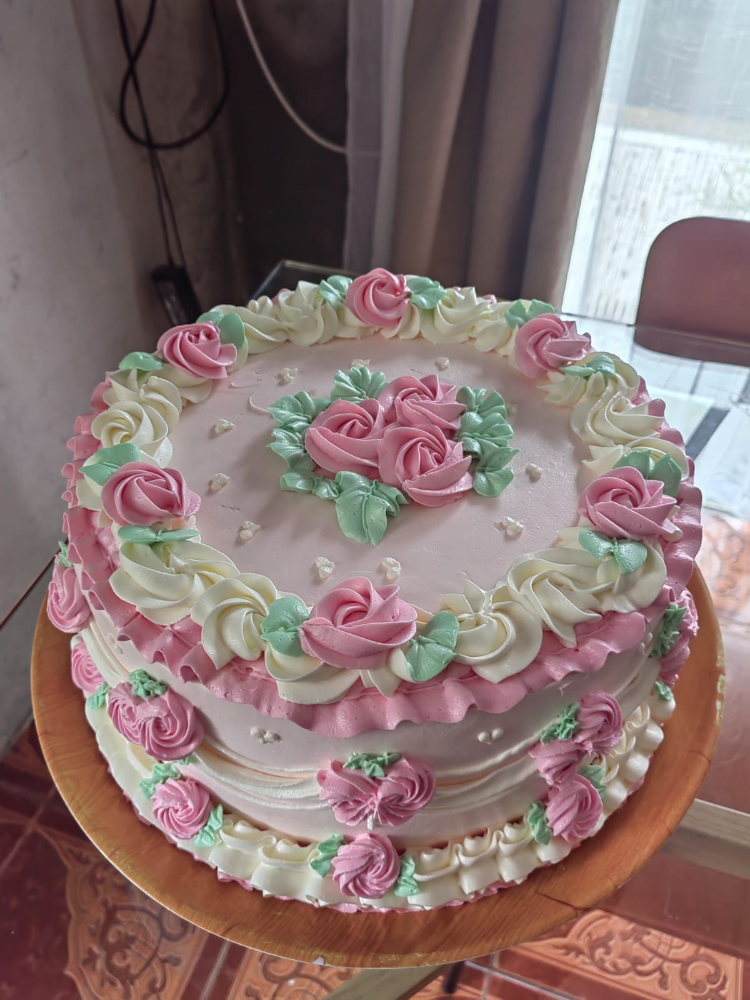

El récord Guinness de 1995
En 1995, Pastelería Mil Sabores participó en la creación de la torta más grande del mundo, un hito que marcó la historia de la repostería chilena y que hasta hoy nos llena de orgullo. Este logro fue posible gracias al trabajo en equipo de decenas de maestros pasteleros durante varios días de preparación.
Ver caso completo